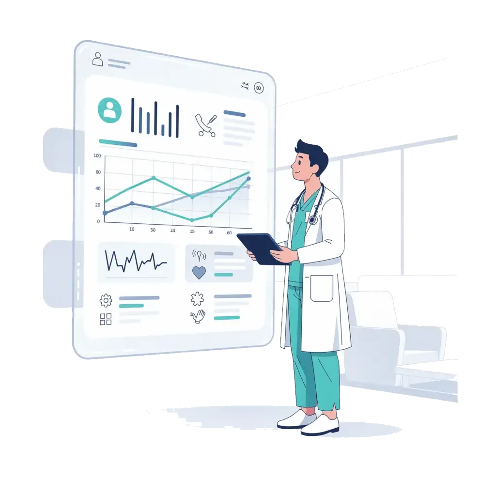

Data & Analytics
Hoe open standaarden zoals FHIR en HL7 de basis leggen voor een geïntegreerd zorglandschap. Een analyse van de Wegiz, EHDS en de rol van het CareHub-ecosysteem.
De Nederlandse gezondheidszorg behoort tot de beste ter wereld, maar achter de schermen worstelt de sector met een fundamenteel probleem: meer dan 1.000 verschillende softwaresystemen die nauwelijks met elkaar communiceren. Van elektronische cliëntdossiers (ECD’s) en huisartsinformatiesystemen tot apotheeksoftware en beeldvormingsplatformen – elk systeem functioneert als een op zichzelf staand eiland.
De gevolgen zijn voelbaar op elk niveau. Patiënten moeten bij iedere zorgverlener opnieuw hun medische geschiedenis delen. Huisartsen hebben geen inzicht in de medicatie die een specialist heeft voorgeschreven. Verpleegkundigen voeren dezelfde gegevens handmatig in meerdere systemen in. Deze versnippering leidt niet alleen tot frustratie, maar ook tot medische risico’s: informatie die niet tijdig beschikbaar is, kan leiden tot foute diagnoses of onnodige dubbele onderzoeken.
Uit recente onderzoeken blijkt dat 70% van de zorginstellingen actief op zoek is naar oplossingen voor betere gegevensuitwisseling. Het besef groeit dat interoperabiliteit – het vermogen van systemen om naadloos data uit te wisselen en te interpreteren – geen luxe meer is, maar een absolute noodzaak voor toekomstbestendige zorg.
De vraag is niet langer óf interoperabiliteit er komt, maar hoe we de transitie naar een geïntegreerd zorglandschap versnellen. In dit artikel analyseren we de wetgevende, technische en praktische dimensies van deze transformatie.
70%
Zoekt interoperabiliteit
1000+
Zorgsoftwaresystemen
40%
Tijdsbesparing door integratie
De overheid heeft de urgentie van interoperabiliteit erkend en vertaald naar concrete wetgeving. De Wet elektronische gegevensuitwisseling in de zorg (Wegiz), aangenomen door de Eerste Kamer, verplicht zorgaanbieders om patiëntgegevens elektronisch uit te wisselen. Dit is een historische stap: voor het eerst wordt digitale gegevensuitwisseling niet langer vrijblijvend, maar wettelijk verplicht.
De Wegiz stelt gefaseerd eisen aan elektronische gegevensuitwisseling. In de eerste tranche worden medicatieoverdracht en de verpleegkundige overdracht verplicht digitaal. Volgende tranches breiden dit uit naar laboratoriumuitslagen, beeldverslagen en verwijsbrieven. Softwareleveranciers moeten aantonen dat hun systemen voldoen aan de gestelde interoperabiliteitsnormen.
Op Europees niveau creëert de European Health Data Space (EHDS) een uniform kader voor gezondheidsgegevens. Dit raamwerk maakt het mogelijk dat een Nederlandse patiënt die in Duitsland of Spanje zorg nodig heeft, toegang heeft tot zijn of haar medische dossier. De EHDS stimuleert daarnaast het secundaire gebruik van geanonimiseerde data voor onderzoek en beleidsvorming.
Het Integraal Zorgakkoord (IZA) vertaalt deze wetgeving naar concrete ambities. Voor 2026 is de doelstelling dat alle relevante zorgaanbieders digitaal gegevens kunnen uitwisselen conform de vastgestelde standaarden. Dit vereist investeringen in infrastructuur, opleiding en cultuurverandering binnen zorginstellingen.
Deze wetgevende driehoek – Wegiz, EHDS en IZA – vormt een ongekende katalysator voor standaardisatie. Zorgorganisaties die nu investeren in interoperabele systemen, positioneren zich niet alleen conform de wet, maar bouwen ook een voorsprong op die de komende jaren cruciaal wordt.
Achter elke succesvolle gegevensuitwisseling in de zorg staan technische standaarden die bepalen hoe systemen met elkaar communiceren. Twee standaarden vormen hierin de ruggengraat: HL7 en FHIR.
HL7 (Health Level Seven) is al decennia de internationale standaard voor het uitwisselen van medische berichten. Het protocol definieert hoe klinische en administratieve data wordt gestructureerd en verzonden tussen systemen. Veel bestaande zorgsoftware in Nederland is gebouwd op HL7 v2-berichten, wat een solide maar soms rigide basis biedt voor gegevensuitwisseling.
FHIR (Fast Healthcare Interoperability Resources) is de opvolger die de zorgsector revolutioneert. In tegenstelling tot traditionele berichtenuitwisseling werkt FHIR met moderne RESTful API’s – dezelfde technologie die apps als iDEAL en DigiD aandrijft. Data wordt gestructureerd in “resources” (bijvoorbeeld Patient, Observation, MedicationRequest) die in realtime bevraagd en gedeeld kunnen worden. Dit maakt FHIR uitermate geschikt voor mobiele applicaties, patiëntportalen en integraties tussen verschillende zorgdomeinen.
Interoperabiliteit zonder beveiliging is onverantwoord. NEN7510 is de Nederlandse norm voor informatiebeveiliging in de zorg en vormt het veiligheidsfundament waarop alle gegevensuitwisseling rust. In combinatie met de AVG waarborgt NEN7510 dat patiëntgegevens niet alleen geïntegreerd, maar ook beschermd worden uitgewisseld. Elke FHIR- of HL7-implementatie moet voldoen aan deze beveiligingsnorm.
FHIR R4 als Nederlandse standaard
Nictiz heeft FHIR R4 aangewezen als de standaard voor nieuwe zorginformatie-uitwisselingen in Nederland, met als doel een uniform en toekomstbestendig digitaal zorglandschap.
Wetgeving en standaarden creëren het kader, maar de werkelijke transformatie vindt plaats in de praktijk. Hier komt het CareHub-ecosysteem van PCD Investment Partners in beeld: een concreet antwoord op de interoperabiliteitsuitdaging.
CareHub verbindt 25 complementaire zorgtechnologiebedrijven die elk een specifiek onderdeel van de zorgketen bedienen. Van ECD-systemen en roostersoftware tot medicatieveiligheid en patiëntcommunicatie – alle oplossingen zijn ontworpen om naadloos samen te werken via open standaarden.
Binnen CareHub is interoperabiliteit geen bijzaak, maar het architectuurprincipe. Alle aangesloten bedrijven implementeren FHIR-interfaces en HL7-koppelingen, waardoor gegevens realtime stromen tussen systemen zonder handmatige tussenkomst of dubbele invoer.
Wat CareHub onderscheidt van losse integraties, is de ecosysteembenadering. In plaats van punt-tot-punt-koppelingen – die exponentieel groeien in complexiteit – biedt CareHub een gedeelde integratielaag. Wanneer een nieuw zorgtechbedrijf aansluit, is het direct verbonden met alle bestaande deelnemers. Dit verlaagt de integratiekosten drastisch en verkort de implementatietijd van maanden naar weken.
PCD Investment Partners selecteert en begeleidt zorgtechbedrijven die aantoonbaar bijdragen aan de interoperabiliteitsambitie. Door shared services op het gebied van compliance, governance en technische architectuur te bieden, waarborgt PCD dat alle ecosysteemdeelnemers voldoen aan Wegiz-vereisten, NEN7510-normen en FHIR-specificaties.
Het resultaat: interoperabiliteit die niet theoretisch blijft op whitepapers, maar dagelijks functioneert in de praktijk van zorgorganisaties door heel Nederland.
Voor zorgorganisaties vertaalt interoperabiliteit zich in tastbare voordelen die zowel de kwaliteit van zorg als de bedrijfsvoering verbeteren.
De transitie naar interoperabele systemen is een investering die zich terugverdient. Organisaties die nu handelen, profiteren niet alleen van operationele efficiëntie, maar voldoen ook proactief aan de Wegiz-verplichtingen die de komende jaren van kracht worden.
Het CareHub-ecosysteem biedt zorgorganisaties een bewezen pad naar interoperabiliteit: geen jarenlange, risicovolle migratietrajecten, maar een modulaire aanpak waarbij bestaande systemen stap voor stap worden verbonden via open standaarden.
De combinatie van wetgeving, open standaarden en het CareHub-ecosysteem maakt geïntegreerde zorg in Nederland werkelijkheid. PCD Investment Partners bouwt de brug tussen ambitie en praktijk.
Ontdek meer inzichten over digitale zorg, zorgtechnologie en het CareHub-ecosysteem.
Ontdek hoe het CareHub-ecosysteem uw systemen verbindt via open standaarden. Neem contact op voor een persoonlijk adviesgesprek over interoperabiliteit.
Neem contact op